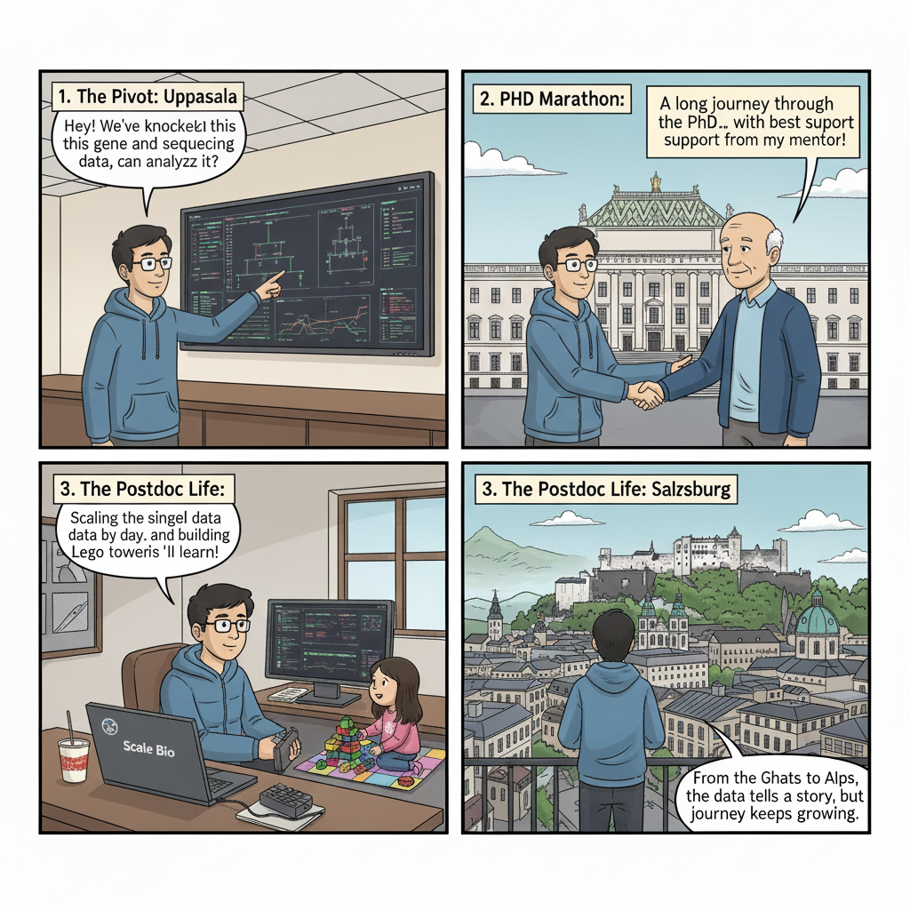

Hi, I'm Rohit Dnyansagar
Bioinformatician | Single-Cell Specialist | Salzburg, Austria
About Me
I am a bioinformatician dedicated to extracting biological insights from complex, high-dimensional datasets. My expertise spans single-cell genomics, transcriptomics, and the development of robust computational pipelines for large-scale sequencing. With a foundational background in pharmaceutical sciences, I bridge the gap between bench biology and dry-lab computation. My earlier research into evolutionary processes and phylogenetic analysis sparked a lifelong fascination with how small molecular changes drive massive biological shifts. Today, I focus on building reproducible workflows and integrating multi-omics data to translate "noise" into medical solutions.
My Journey



Research Highlights
Speciation Study


Published Study
- Genome comparison
- RNA-seq analysis
- Visualization scripts
My Technical Contribution (GitHub)
Tools Used
- Python (pandas, scipy)
- R (tidyverse, ggplot2)
- Linux / Bash pipelines
Axis Patterning


Published Study
- Multi-omics comparison
- ChIP-seq analysis
- Phylogenetics
Neuroblastoma & Epigenetics


Published Study
- Single-cell multi-omics
- scATAC-seq processing
- Data integration
First Paper


Published Study
First NGS Experience


Published Study
Phylogenetic Contribution

Published Study
Current Projects


Ongoing Work
- Ketogenic diet & melanoma
- Multi-omics integration